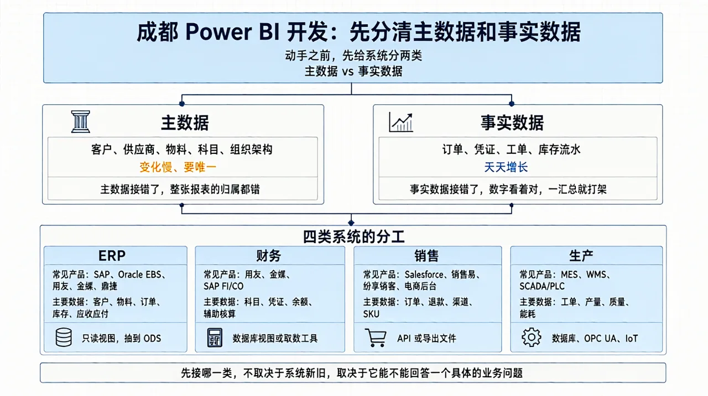
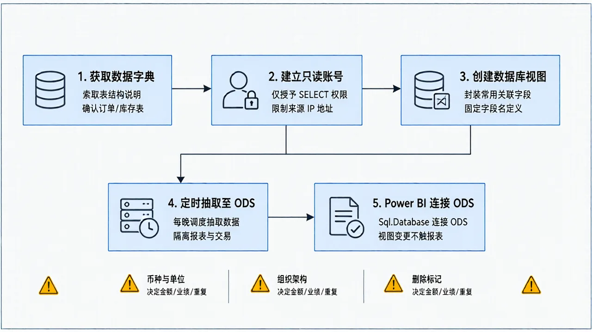
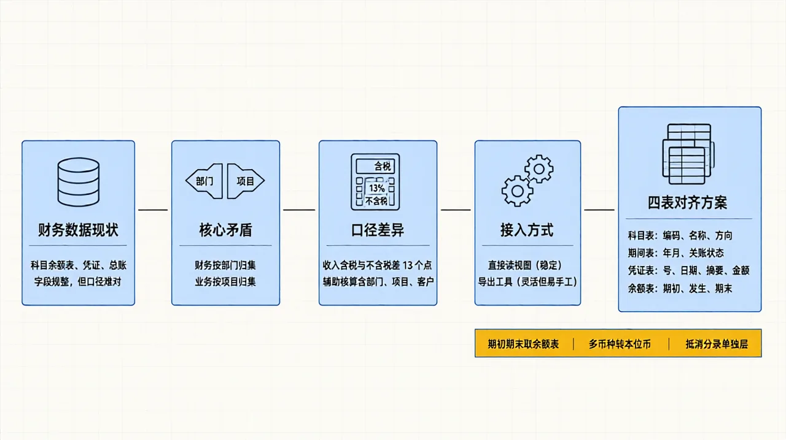
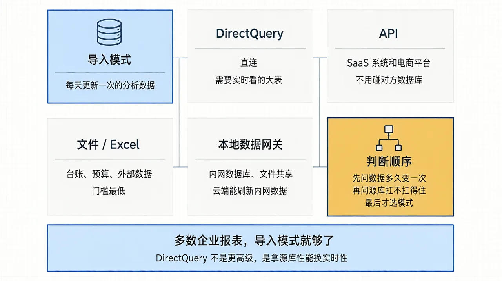

成都 Power BI 开发：数据源通常从哪四类系统来
成都企业做 Power BI，数据源基本是 ERP、财务、销售、生产四类。接入口、常见坑、选择顺序一次讲清。
先说结论：成都企业做 Power BI，数据源九成落在四类系统——ERP、财务、销售、生产。剩下的零头是 Excel、手工台账和外部数据。
搜「成都 Power BI 开发」的人，多半不是想听概念，而是手上有一堆系统，不知道先接哪个、怎么接、接了会不会出事。这篇按系统类型拆：每类里有什么数据、常见怎么接进来、哪一步最容易翻车。最后给一张接入方式对比表和一句判断。
成都 Power BI 开发：先分清主数据和事实数据
动手之前，先给系统分两类。
主数据是客户、供应商、物料、科目、组织架构，变化慢、要唯一。事实数据是订单、凭证、工单、库存流水，天天增长。主数据接错了，整张报表的归属都错；事实数据接错了，数字看着对，一汇总就打架。
四类系统的分工大致是这样：
| 系统类型 | 常见产品 | 主要数据 | 常见接入方式 | 主要难点 |
|---|---|---|---|---|
| ERP | SAP、Oracle EBS、用友、金蝶、鼎捷 | 客户、物料、订单、库存、应收应付 | 只读视图，抽到 ODS | 生产库不能直连 |
| 财务 | 用友、金蝶、SAP FI/CO | 科目、凭证、余额、辅助核算 | 数据库视图或取数工具 | 口径不统一 |
| 销售 | Salesforce、销售易、纷享销客、电商后台 | 订单、退款、渠道、SKU | API 或导出文件 | 退款与 SKU 映射 |
| 生产 | MES、WMS、SCADA/PLC | 工单、产量、质量、能耗 | 数据库、OPC UA、IoT | 数据频率太高 |
先接哪一类，不取决于系统新旧，取决于它能不能回答一个具体的业务问题。

一、ERP：数据最全，也最不该直连
ERP 是所有系统里数据最全的。客户、供应商、物料、订单、库存、应收应付，一份主数据能撑起后面所有报表。
成都的制造和贸易企业，上 SAP、Oracle EBS 的不少，用友 U8/U9/NC、金蝶 K3/云星空、鼎捷 T100/易飞也很常见。
接 ERP 有一条铁律：不要直连生产库跑报表。
原因不复杂。ERP 的生产库白天在做交易，报表一个全表扫描，可能把订单录入拖慢。采购、仓库一卡，问题最后都会找到做报表的人头上。
正确顺序是五步：
- 要数据字典。找厂商或内部 IT 要表结构说明，确认订单主表、明细表、库存流水分别在哪张表。没有字典就动手，等于蒙着眼睛建模。
- 建只读账号。只给 SELECT 权限，限定来源 IP，别用 sa 或系统管理员账号。这一步是底线，不是可选项。
- 在库上建视图。把常用关联（订单 + 明细 + 客户 + 物料）封装成视图，把字段名固定下来。Power BI 只读视图。
- 定时抽到 ODS。用调度工具或 SQL Agent 每晚抽一次，落到自己的库。为什么多这一层？因为报表刷新不该和生产交易抢资源。
- Power BI 只连 ODS。生产库、ODS、报表三层分开，任何一层出问题都查得清。
Power Query 接只读视图，M 代码就这几行：
let
Source = Sql.Database("10.0.0.21", "ODS_ERP"),
dbo_OrderDetail = Source{[Schema="dbo", Item="v_OrderDetail"]}[Data]
in
dbo_OrderDetail
Sql.Database 连的是 ODS 库，v_OrderDetail 是库上建好的视图。ERP 换版本、表结构变了，只改视图，不改报表。
三个容易漏的点：币种和单位，决定金额对不对；组织架构，决定业绩算给谁；删除标记，决定历史数据会不会重复。前两个错，数字全错；第三个错，报表会慢慢变胖。

二、财务系统：接口好接，口径难对
财务数据看起来最容易：科目余额表、凭证、总账，都在数据库里，字段也规整。
麻烦在口径。
同一笔费用，财务按部门归集，业务按项目归集；同一笔收入，含税和不含税差 13 个点；辅助核算有部门、项目、客户三套维度，报表要能按任意一套切。这些不是接口问题，是定义问题。
接入方式通常两种：直接读财务库的视图，或者用财务系统自带的取数工具导出。前者稳定，后者灵活但容易变成每月一次的手工活。
我的做法是先定四张表：科目表、期间表、凭证表、余额表。四张表的粒度对齐了，后面的指标才有得算。
- 科目表：科目编码、名称、借贷方向
- 期间表：年月、是否关账
- 凭证表：凭证号、日期、摘要、借贷金额、辅助核算
- 余额表：期初、本期发生、期末
几个细节：
- 期初期末直接取余额表，别用累计数反推，反推出来的数在跨年时一定对不上
- 多币种先统一到本位币，汇率口径写进指标定义
- 合并报表的抵消分录单独放一层，别混进明细，否则明细一加总就是错的
权限也要同步做。财务数据必须按部门或成本中心做行级权限，博客里写过静态角色和动态角色两种写法，这里不展开。

三、销售系统：一半在数据库，一半在 API
销售数据分两种形态。
自建订单系统、本地部署的 CRM，直接读库就行，方法和 ERP 一样：只读账号加视图。
SaaS 的 CRM 和电商平台只能走 API 或文件。CRM 这类系统要处理三件事：分页、增量时间戳、限流。别一次拉全量，按更新时间增量拉，接口给你返回多少页就是多少页。电商后台如果没开放接口，先用导出文件兜底，把文件放进固定目录，Power Query 批量读。
真正的坑不在接入，在字段。
- 退款和取消单：订单表里的金额不是净销售额，要减掉退款和取消，否则销售看板永远虚高
- 渠道归属：线上下单、门店发货，这笔业绩算线上还是门店，得先有规则
- SKU 映射：同一个商品，ERP 物料编码、电商商品 ID、门店条码是三套，不建映射表，销量永远对不上
前两条是业务规则，第三条是数据工程。三件事里最容易做、收益最大的是映射表，先建它。
四、生产系统：别把秒级数据直接灌进模型
制造企业数据量最大的地方在生产侧。MES、WMS、SCADA/PLC、能耗采集，一个车间一天的数据量可能超过整个 ERP。
接入方式按系统分：
- MES、WMS：一般是 SQL Server 或 Oracle，读视图即可
- PLC、设备接口：走 OPC UA，或者先汇到 IoT 平台再取
- 能耗、实时监控：要求高的走 Eventstream（Fabric 的实时数据管道）加 KQL（一种面向日志和时序数据的查询语言）
关键在频率。设备数据是秒级、毫秒级的，原样进 Power BI 模型，模型会撑爆，刷新也跑不完。
正确做法是先聚合：按班次、小时、工序落一张汇总事实表，模型只读汇总结果。要看明细时再单独做一个钻取页，不要把所有细节塞进同一个模型。
另一个常见问题是编码。设备编码和工单号对不上，产量和质量数据就挂不到一起。上线前先做一次对码，比事后补数据省事得多。
四类系统之外：Excel 和手工台账
不要小看这部分。不少成都企业的销售预测、预算、费用台账还停在 Excel。
这类数据不该硬接。先定模板，用 Power Query 从固定目录批量读；结构不稳定的部分，人工维护一张对照表。模板比接口重要——接口能改，人的习惯改不动。
接入方式怎么选：一张表
| 接入方式 | 适合的数据 | 优点 | 代价 |
|---|---|---|---|
| 导入模式 | 每天更新一次的分析数据 | 查询快，模型可控 | 要定时刷新，有时差 |
| DirectQuery 直连 | 需要实时看的大表 | 不占内存，数据实时 | 每次查询都压源库 |
| API | SaaS 系统和电商平台 | 不用碰对方数据库 | 限流、分页、字段会变 |
| 文件 / Excel | 台账、预算、外部数据 | 门槛最低 | 结构易变，容易出错 |
| 本地数据网关 | 内网数据库、文件共享 | 云端能刷新内网数据 | 要一台常开的机器 |
判断顺序：先问数据多久变一次，再问源库扛不扛得住，最后才选模式。多数企业报表，导入模式就够了。DirectQuery 不是更高级，是拿源库性能换实时性。

内网数据上云：网关是必答题
ERP、财务、MES 的库都在公司内网，Power BI 服务在云端，中间要有一座桥，就是本地数据网关（on-premises data gateway，装在域内一台机器上，代理云端向内网取数）。
微软 11 月 20 日发布了网关 2026 年 11 月版，版本号 3000.342。这次的重点不是新功能，是稳定性：修了服务主体令牌刷新后元数据丢失的问题，优化了重复包的确认处理和序列化时的内存占用，也更新了加密依赖，堵掉一个已知漏洞。对企业的实际意义是刷新失败会少一些，排错也更容易。
网关有几条运维要求，提前说清楚，比出事后救火划算：
- 一台常开的 Windows 机器，别装在谁的个人电脑上
- 内存给够，多个数据源同时刷新会排队
- 数据库密码换了，网关里的凭据要同步改，否则第二天刷新全红
- 生产环境建议装两台做集群，一台挂另一台接
- 网关版本要跟着 Power BI Desktop 更新，版本差太多会出现本地能连、云端刷不了
常见问题
四类系统都要接吗？
不用。先接能回答业务问题的那一类。多数企业第一版报表围绕销售和财务，ERP 提供主数据，生产数据放第二期。
没有 IT 支持，能自己接吗？
只读视图和网关这两步绕不开 IT。可以先用 Excel 和 SaaS 数据把模型、指标跑通，拿结果去申请数据库权限，比空口申请容易得多。
DirectQuery 是不是比导入模式好？
不是。它换来的是实时，代价是每次查询都压源库。报表用户一多，源库先扛不住。分析型报表默认用导入。
换系统了，报表要重做吗？
在 Power Query 里加一层暂存查询，把字段名统一，报表层只引用暂存层。换系统时只改暂存层，度量值和视觉对象不动。
我的判断
数据源这件事，优先级很清楚：
- 先理 ERP 主数据和财务口径，这两块决定报表可不可信
- 再接销售，它决定报表有没有人看
- 生产数据最后接，先聚合再进模型
三类企业可以照这个顺序做：制造业先接 ERP 加 MES 的班次产量；贸易和零售先接 ERP 加电商订单；集团型公司先做财务合并，再往下拆业务。
两种情况下别急着接。连数据字典都没有的老系统，先把字段含义问清楚；业务口径一天三变的部门，先定指标再谈数据源。这两种情况接了也是白接，返工的成本比晚接一个月高得多。
做了 10 年报表，数据源梳理永远是每个项目的第一步，也是最容易被跳过的一步。这类盘点和接入规划属于服务里最先做的一环，手上有几套系统、分别是什么，列出来就能排接入顺序，联系页有方式。之前做的 FinOps 看板，27 个业务单元、28 个 RLS 角色，案例里能看到指标和权限是怎么分层的。